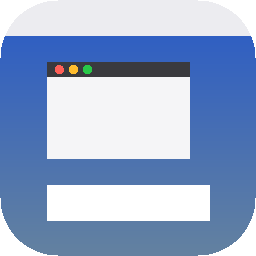

MacStatusBar&Dock
A macOS-style menu bar, Dock and windows for jailbroken iPads (rootless, iPadOS 15–16).
Add to Sileo About the tweak
Add this repo by hand
In Sileo, Zebra or another package manager, add:
In Sileo, Zebra or another package manager, add:
https://besiktasliseba.github.io/repo/